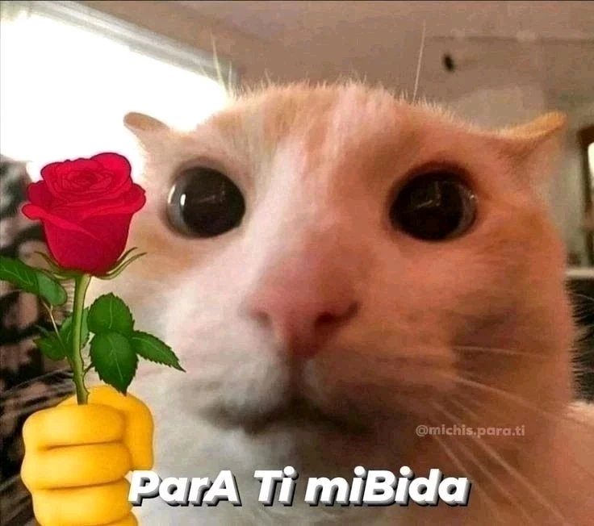

pista: es tu cumpleaños
error :( vuelve a intentar
haz clic para leer
Querido Brando,
No sé cómo agradecerte lo suficiente por estar conmigo. Desde que entraste en mi vida, cada día se ha sentido más especial. Con cada mensaje, cada videollamada, iluminas mi mundo de una manera que ni siquiera puedes imaginar. Haces que todo sea más bonito, más llevadero, y aunque estemos lejos por ahora, te siento cerca en cada palabra, en cada risa compartida. Significas mucho para mí.
No puedo esperar a que llegue mayo para poder ver tu hermosa cara en persona. Imaginar el momento en que finalmente pueda besarte y abrazarte me llena de emoción. Va a ser nuestro momento, y cada segundo juntos lo voy a atesorar. Quiero darte todo el amor que tengo guardado para ti, porque te lo mereces todo y más.
Siempre te voy a amar, Brando. Siempre estaré aquí para ti, en lo bueno y en lo malo, para apoyarte, para levantarte, para recordarte lo increíble que eres. Siempre te elegiré, pase lo que pase, porque te amo más que a nada. No hay nada que quiera más que verte feliz. Gracias por ser tú.
No hay nadie como tú. Eres mi felicidad. Te amo con todo mi corazón, hoy y siempre.
Con amor,
Afia 🥰
feliz día de san valentín amorcito <3, te amo mucho xoxo
